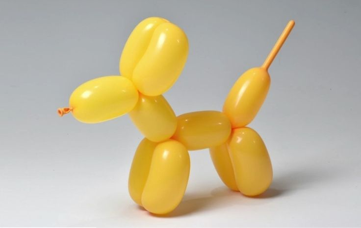
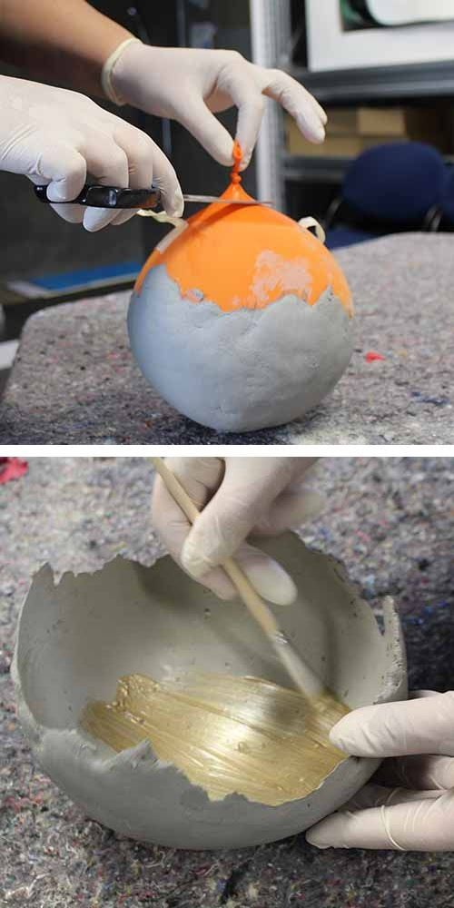

🐾 Balon Hayvanlar

Malzemeler:
• Uzun modelleme balonları (hayvan yapımı için)
• Pompa (balon şişirmek için)
Adımlar:
1- Balonu pompa ile şişir.
2- Balonu burgu ve katlama teknikleri ile köpek, kedi, kılıç gibi hayvan şekillerine getir.
3- İnternette balon modelleme videoları izleyerek farklı şekiller öğrenebilirsin.
💡 Balon Lambası

Malzemeler:
• Yuvarlak balon
• İnce ip veya yün
• Beyaz yapıştırıcı
• LED ışık (ısı yaymayan)
Adımlar:
1- Balonu şişir.
2- İpi beyaz yapıştırıcıya batır ve balonun etrafına sar.
3- İpi kurumaya bırak.
4- Kuruduktan sonra balonu patlat ve ip topunu al.
5- İçine LED ışık yerleştirerek dekoratif lamba yap.
🎍 Balon Vazo

Malzemeler:
• Yuvarlak balon
• Sıvı alçı veya alçı tozu ve su karışımı
• Boya ve fırça (isteğe bağlı)
Adımlar:
1- Balonu istediğin büyüklükte şişir.
2- Balonun üst kısmına tutkal sür veya yağlı kağıt ile kapla (alçının balona yapışmaması için).
3- Alçı karışımını balonun üzerine kalın bir tabaka halinde uygula.
4- Alçı kuruduktan sonra balonu patlat ve çıkar.
5- İstersen alçı vazoyu boyayabilir veya süsleyebilirsin.